info = Data.get_kinase_info()Plot
Functions to plot motif logo, heatmap, scatter plot, and others.
Overview
Utilities
To set seaborn resolution for notebook display:
set_sns(
dpi=300, # resolution for figure display
)To save plot as SVG with editable text:
save_svg(
path='figure.svg', # output file path
)To save plot as PDF with Illustrator-compatible fonts:
save_pdf(
path='figure.pdf', # output file path
)To show plot or save to file:
save_show(
path='figure.png', # image path; if None, calls plt.show()
show_only=False, # if True, always show instead of save
)Color & Palette
To assign colors to a list of category names:
color_dict = get_color_dict(
categories=['A', 'B', 'C'], # list of names to assign colors
palette='tab20', # seaborn palette name
)To get a list of colors for plotting from a dict, list, or palette name:
colors = get_plt_color(
palette=color_dict, # dict, list, or palette name like 'tab10'
columns=df.columns, # column names to match colors
)To filter hue categories by count threshold (for cleaner plots):
hue_big = get_hue_big(
df=info, # dataframe containing categories
hue_col='group', # column name for hue
cnt_thr=10, # minimum count to include category
)Dimensionality Reduction
To reduce dimensionality using PCA, TSNE, or UMAP:
embedding_df = reduce_feature(
df=df, # dataframe of values
method='pca', # 'pca', 'tsne', or 'umap'
complexity=20, # perplexity for TSNE, n_neighbors for UMAP
n=2, # number of components
load=None, # path to load pre-trained model
save=None, # path to save trained model
seed=123, # random state for reproducibility
)2D Scatter Plots
To plot a 2D scatter from pre-computed embeddings:
plot_2d(
embedding_df=feat, # dataframe with 2 columns (e.g., PCA1, PCA2)
hue=info['group'], # series/list for coloring points
palette='tab20', # color palette
legend=True, # show legend
legend_title='Group', # custom legend title
name_list=None, # list of names to annotate points
s=20, # dot size
)To reduce dimensions and plot in one step:
plot_cluster(
df=df, # dataframe of values
method='umap', # 'pca', 'tsne', or 'umap'
hue=info['group'], # series for coloring
complexity=15, # perplexity/n_neighbors
palette='tab20', # color palette
legend=True, # show legend
name_list=None, # list of names to annotate
seed=123, # random state
s=50, # dot size
)To create an interactive Bokeh plot with search box:
plot_bokeh(
X=embedding_df, # 2-column dataframe from reduce_feature
idx=info['Name'], # identity labels for search
hue=info['Group'], # category for coloring
s=7, # dot size
smiles=info['SMILES'], # additional hover info (kwargs)
)Rank & Distribution
To plot ranked values with top/bottom annotations:
plot_rank(
sorted_df=sorted_df, # pre-sorted dataframe
x='kinase', # column for x-axis labels
y='values', # column for y-axis values
n_hi=10, # number of top values to label
n_lo=10, # number of bottom values to label
figsize=(10, 8), # figure size
)To plot a histogram with KDE:
plot_hist(
df=sorted_df, # dataframe with values
x='values', # column name for histogram
figsize=(6, 2), # figure size
)Bar & Box Plots
To plot horizontal bar counts from value_counts:
plot_count(
cnt=df['col'].value_counts(), # value counts series
tick_spacing=10, # x-axis tick interval
palette='tab20', # color palette
)To plot bar graph with optional strip dots:
plot_bar(
df=info, # unstacked dataframe
value='MW', # column name for values
group='category', # column name for grouping
title='Title', # plot title
figsize=(12, 5), # figure size
dots=True, # add strip dots
rotation=90, # x-tick rotation
ascending=False, # sort order
)To plot grouped bar chart for multiple value columns:
plot_group_bar(
df=info, # dataframe
value_cols=['pKa1', 'pKb2'], # list of value columns
group='Name', # grouping column
figsize=(12, 5), # figure size
order=None, # custom x-axis order
rotation=90, # x-tick rotation
)To plot box plot with optional dots:
plot_box(
df=info, # dataframe
value='MW', # value column
group='category', # grouping column
figsize=(6, 3), # figure size
dots=True, # show individual points
rotation=90, # x-tick rotation
)Violin Plot
To plot violin plot with optional strip dots:
ax = plot_violin(
data=df_long, # long-form dataframe
value='value', # column for values
group='variable', # column for grouping
ylabel='Accuracy', # y-axis label
dots=True, # add strip dots
figsize=(5, 3), # figure size
)To add statistical annotations to violin/box plots:
add_stats(
ax=ax, # axes from plot_violin
data=df_long, # same dataframe
value='value', # value column
group='variable', # group column
pairs=None, # comparison pairs (auto-generated if None)
test='t-test_ind', # statistical test
text_format='star', # annotation format ('star' or 'simple')
)Correlation & Heatmap
To plot correlation scatter with Spearman/Pearson stats:
plot_rel(
df=norm, # dataframe with columns to correlate
x='AAK1', # x-axis column
y='BIKE', # y-axis column
method='spearman', # 'spearman' or 'pearson'
text_location=(0.8, 0.1), # position for stats text
index_list=None, # indices to annotate
hue=None, # optional hue column
reg_line=True, # show regression line
)To calculate distance/similarity matrices:
dist_df, sim_df = get_similarity(
df=df, # dataframe of features
metric='euclidean', # distance metric
)To plot correlation/similarity heatmap:
plot_corr(
df_corr=corr, # correlation matrix
inverse_color=False, # reverse colormap
figsize=(15, 10), # figure size
)Evaluation Metrics
To plot AUCDF (Area Under CDF) for ranking evaluation:
aucdf = get_AUCDF(
df=sorted_df, # dataframe with rank values
col='values', # column name for ranks
reverse=False, # reverse CDF direction
plot=True, # show plot
xlabel='Rank of reported kinase', # x-axis label
)To plot normalized confusion matrix:
plot_confusion_matrix(
target=y_true, # true labels
pred=y_pred, # predicted labels
class_names=['0', '1'], # class label names
normalize=True, # normalize by row
title='Confusion matrix', # plot title
cmap=plt.cm.Blues, # colormap
)Pie & Composition
To plot pie chart from value counts:
plot_pie(
value_counts=df['col'].value_counts(), # value counts series
hue_order=None, # custom category order
labeldistance=1, # label distance from center
fontsize=10, # label font size
fontcolor='black', # label color
palette='tab20', # color palette
figsize=(4, 3), # figure size
)To plot stacked bar showing composition percentages:
plot_composition(
df=df, # dataframe
bin_col='bin', # column for x-axis bins
hue_col='category', # column for stacked hue
palette='tab20', # color palette
legend_title='Type', # legend title
rotate=45, # x-tick rotation
xlabel=None, # x-axis label
ylabel='Percentage', # y-axis label
figsize=(5, 3), # figure size
)To plot bar count with value labels on top:
plot_cnt(
cnt=df['col'].value_counts(), # value counts series
xlabel=None, # x-axis label
ylabel='Count', # y-axis label
figsize=(6, 3), # figure size
)Setup
Utils
set_sns
def set_sns(
dpi:int=300
):
Set seaborn resolution for notebook display
save_svg
def save_svg(
path
):
save_pdf
def save_pdf(
path
):
save_show
def save_show(
path:NoneType=None, # image path, e.g., img.svg, if not None, will save, else plt.show()
show_only:bool=False
):
Show plot or save path
Color/palette
get_color_dict
def get_color_dict(
categories, # list of names to assign color
palette:str='tab20', # choose from sns.color_palette
):
Assign colors to a list of names (allow duplicates), returns a dictionary of unique name with corresponding color
info.modi_group.value_counts().indexIndex(['TK', 'CAMK', 'Other', 'CMGC', 'AGC', 'STE', 'TKL', 'Atypical', 'CK1',
'NEK', 'RGC'],
dtype='object', name='modi_group')info.pspa_category_big.str.split('_').str[0].value_counts()[:20].indexIndex(['Basophilic', 'Pro-directed', 'Acidophilic', 'Map3k', 'Map4k',
'Alpha/mlk', 'Fgf and vegf receptors', 'Assorted', 'Ripk/wnk', 'Pkc',
'Ephrin receptors', 'Eif2ak/tlk', 'Nek/ask', 'Pdgf receptors', 'Src',
'Jak', 'Tam receptors', 'Cmgc', 'Tec', 'Ulk/ttbk'],
dtype='object', name='pspa_category_big')get_subfamily_color
def get_subfamily_color(
):
# get_subfamily_color()Sometimes plot functions do not take dict of colors but list of colors:
get_plt_color
def get_plt_color(
palette, # dict, list, or set name (tab10)
columns, # columns in the df for plot
):
Given a dict, list or set name, return the list of names; if dict, need to provide column names of the df.
get_plt_color('Set2',['a','b'])get_hue_big
def get_hue_big(
df, hue_col, # column of hue
cnt_thr:int=10, # higher or equal to this threshold will be considered
):
Get part of hue according to its value counts; applied when the groups are too many.
When the categories are too many to show on the plot, we can filter and only show those big categories:
hue_big=get_hue_big(info,'pspa_category_big',10)
hue_big5 Acidophilic
6 Acidophilic
11 Basophilic
12 Basophilic
13 Basophilic
...
516 Acidophilic
517 Acidophilic
519 Map4k
520 Map3k
521 Map3k
Name: pspa_category_big, Length: 294, dtype: object# plot_2d(embed,hue=hue_pspa,hue_title='PSPA category',palette='tab20')Dimensionality reduction
reduce_feature
def reduce_feature(
df:DataFrame, method:str='pca', # dimensionality reduction method, accept both capital and lower case
complexity:int=20, # None for PCA; perfplexity for TSNE, recommend: 30; n_neigbors for UMAP, recommend: 15
n:int=2, # n_components
load:str=None, # load a previous model, e.g. model.pkl
save:str=None, # pkl file to be saved, e.g. pca_model.pkl
seed:int=123, # seed for random_state
kwargs:VAR_KEYWORD
):
Reduce the dimensionality given a dataframe of values
A very common way to reduce feature number is to use dimensionality reduction method. reduce_feature is a dimensionality reduction function that can apply three dimensionality reduction methods: PCA, UMAP, TSNE. The later two is non-linear transformation, and PCA is linear transformation. Therefore, for plotting purpose, it is good to use UMAP/TSNE, by setting n (n_components) to 2 for 2d plot; for featuring purpose, it is good to use PCA, and set n to values to a rational values, like 64, 128 etc.
# Load data
df=Data.get_aa_morgan()
# Use PCA to reduce dimension; reduce the number of features to 20
feat = reduce_feature(df,'pca',n=2)
feat.head()| PCA1 | PCA2 | |
|---|---|---|
| aa | ||
| A | -0.954819 | -0.953761 |
| C | -0.041108 | 0.205091 |
| D | -0.087707 | 0.245634 |
| E | -0.271097 | 1.023801 |
| F | 2.253264 | -0.251185 |
2D scatter plot
plot_2d
def plot_2d(
embedding_df:DataFrame, # a dataframe of values that is waited for dimensionality reduction
hue:str=None, # colname of color
palette:str='tab20', # color scheme, could be tab10 if less categories
legend:bool=False, # whether or not add the legend on the side
name_list:NoneType=None, # a list of names to annotate each dot in the plot
s:int=20, # size of the dot
legend_title:str=None, # new argument to override legend title
kwargs:VAR_KEYWORD
):
Given a dataframe of values, plot it in 2D. The method could be ‘pca’, ‘tsne’, or ‘umap’.
plot_2d(feat)/tmp/ipykernel_674/2710618909.py:17: UserWarning: Ignoring `palette` because no `hue` variable has been assigned.
g = sns.relplot(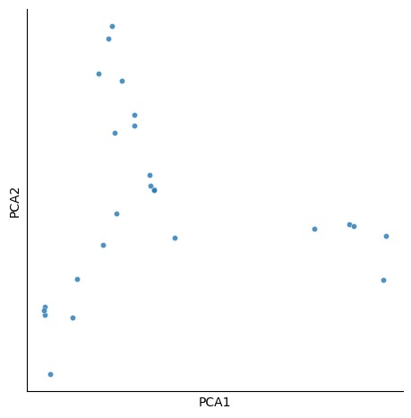
Dimensionality reduction + 2d plot
plot_cluster
def plot_cluster(
df:DataFrame, # a dataframe of values that is waited for dimensionality reduction
method:str='pca', # dimensionality reduction method, choose from pca, umap, and tsne
hue:str=None, # colname of color
complexity:int=30, # this argument does not affect pca but others; recommend 30 for tsne, 15 for umap
palette:str='tab20', # color scheme, could be tab10 if less categories
legend:bool=False, # whether or not add the legend on the side
name_list:NoneType=None, # a list of names to annotate each dot in the plot
seed:int=123, # seed for dimensionality reduction
s:int=50, # size of the dot
legend_title:str=None, # new argument to override legend title
kwargs:VAR_KEYWORD
):
Given a dataframe of values, plot it in 2D. The method could be ‘pca’, ‘tsne’, or ‘umap’.
plot_cluster(df,method='pca',legend=True)/tmp/ipykernel_674/39475780.py:22: UserWarning: Ignoring `palette` because no `hue` variable has been assigned.
g = sns.relplot(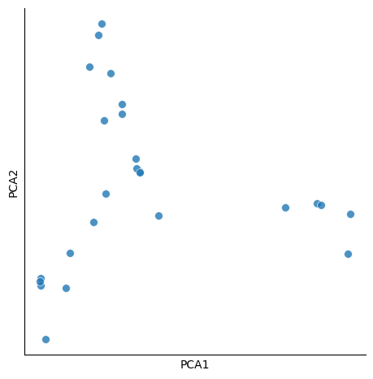
Bokeh interactive plot
plot_bokeh
def plot_bokeh(
X:DataFrame, # a dataframe of two columns from dimensionality reduction
idx, # pd.Series or list that indicates identities for searching box
hue:None, # pd.Series or list that indicates category for each sample
s:int=3, # dot size
kwargs:VAR_KEYWORD
):
Make interactive 2D plot with a searching box and window of dot information when pointing
Rank
plot_rank
def plot_rank(
sorted_df:DataFrame, # a sorted dataframe
x:str, # column name for x axis
y:str, # column name for y aixs
n_hi:int=10, # if not None, show the head n names
n_lo:int=10, # if not None, show the tail n names
figsize:tuple=(10, 8), # figure size
data:NoneType=None, hue:NoneType=None, size:NoneType=None, style:NoneType=None, palette:NoneType=None,
hue_order:NoneType=None, hue_norm:NoneType=None, sizes:NoneType=None, size_order:NoneType=None,
size_norm:NoneType=None, markers:bool=True, style_order:NoneType=None, legend:str='auto', ax:NoneType=None
):
Plot rank from a sorted dataframe
# load data
# df = Data.get_pspa_raw().set_index('kinase')
df = pd.read_csv('https://github.com/sky1ove/katlas_raw/raw/refs/heads/main/nbs/raw/pspa_st_raw.csv').set_index('kinase')
# get sorted dataframe
sorted_df = df.max(1).reset_index(name='values').sort_values('values')
sorted_df.head()| kinase | values | |
|---|---|---|
| 68 | CK1G2 | 189898.392 |
| 294 | VRK2 | 4191709.640 |
| 8 | ALPHAK3 | 4573611.730 |
| 249 | PRPK | 8495330.790 |
| 38 | CAMLCK | 9413689.600 |
plot_rank(sorted_df,x='kinase',y='values')
plt.xlabel('kinase');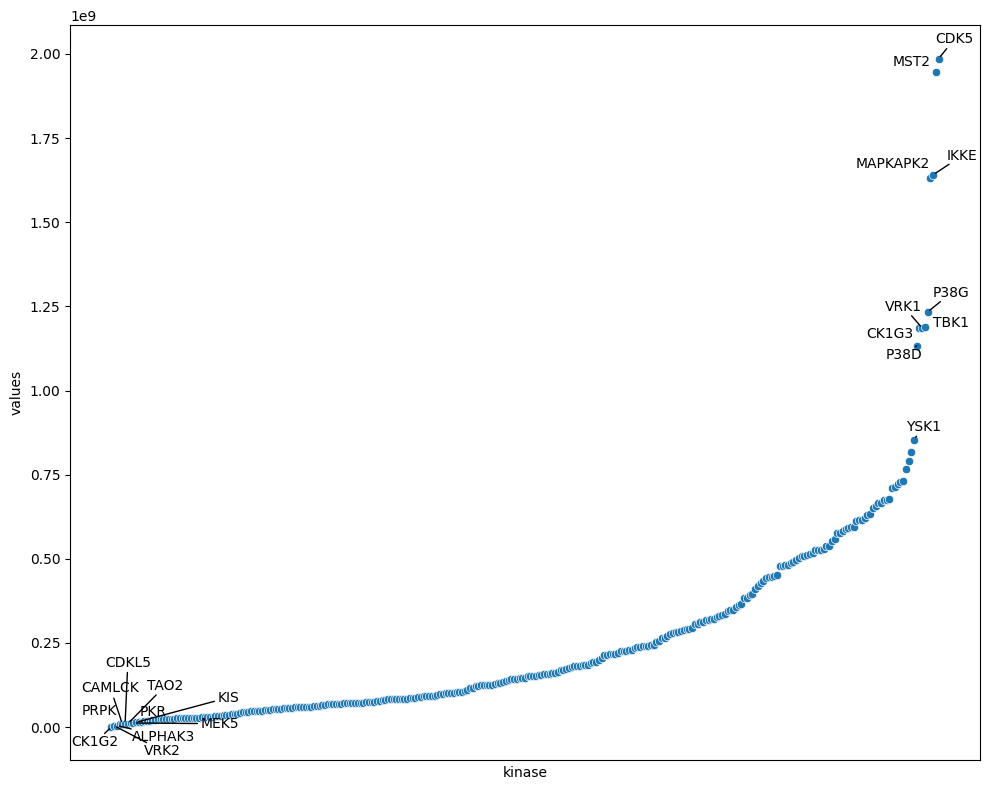
Distribution histogram
plot_hist
def plot_hist(
df:DataFrame, # a dataframe that contain values for plot
x:str, # column name of values
figsize:tuple=(6, 2), data:NoneType=None, y:NoneType=None, hue:NoneType=None,
weights:NoneType=None, # Vector variables
stat:str='count', bins:str='auto', binwidth:NoneType=None,
binrange:NoneType=None, # Histogram computation parameters
discrete:NoneType=None, cumulative:bool=False, common_bins:bool=True, common_norm:bool=True,
multiple:str='layer', element:str='bars', fill:bool=True, shrink:int=1, # Histogram appearance parameters
kde:bool=False, kde_kws:NoneType=None,
line_kws:NoneType=None, # Histogram smoothing with a kernel density estimate
thresh:int=0, pthresh:NoneType=None, pmax:NoneType=None, cbar:bool=False, cbar_ax:NoneType=None,
cbar_kws:NoneType=None, # Bivariate histogram parameters
palette:NoneType=None, hue_order:NoneType=None, hue_norm:NoneType=None,
color:NoneType=None, # Hue mapping parameters
log_scale:NoneType=None, legend:bool=True, ax:NoneType=None, # Axes information
):
# we can use the same df
sorted_df.head()| kinase | values | |
|---|---|---|
| 68 | CK1G2 | 189898.392 |
| 294 | VRK2 | 4191709.640 |
| 8 | ALPHAK3 | 4573611.730 |
| 249 | PRPK | 8495330.790 |
| 38 | CAMLCK | 9413689.600 |
plot_hist(sorted_df,'values')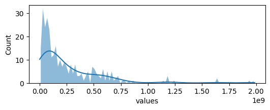
Bar graph
plot_count
def plot_count(
cnt, # from df['x'].value_counts()
tick_spacing:float=None, # tick spacing for x axis
palette:str='tab20'
):
Make bar plot from df[‘x’].value_counts()
cnt = info.Name.value_counts()plot_count(cnt)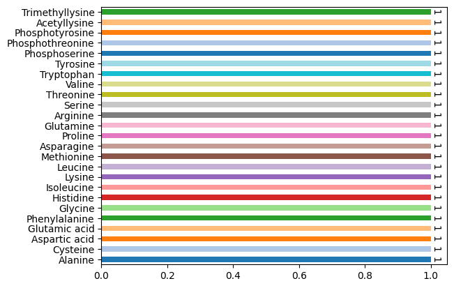
plot_bar
def plot_bar(
df, value, # colname of value
group, # colname of group
title:NoneType=None, figsize:tuple=(12, 5), fontsize:int=14,
dots:bool=True, # whether or not add dots in the graph
rotation:int=90, ascending:bool=False, ymin:NoneType=None, data:NoneType=None, x:NoneType=None, y:NoneType=None,
hue:NoneType=None, order:NoneType=None, hue_order:NoneType=None, estimator:str='mean', errorbar:tuple=('ci', 95),
n_boot:int=1000, seed:NoneType=None, units:NoneType=None, weights:NoneType=None, orient:NoneType=None,
color:NoneType=None, palette:NoneType=None, saturation:float=0.75, fill:bool=True, hue_norm:NoneType=None,
width:float=0.8, dodge:str='auto', gap:int=0, log_scale:NoneType=None, native_scale:bool=False,
formatter:NoneType=None, legend:str='auto', capsize:int=0, err_kws:NoneType=None, ci:Deprecated=<deprecated>,
errcolor:Deprecated=<deprecated>, errwidth:Deprecated=<deprecated>, ax:NoneType=None
):
Plot bar graph from unstacked dataframe; need to indicate columns of values and categories
info['cat'] = (info.pKa1>2).astype(int)# get an unstacked dataframe
plot_bar(info,value='MW',group='cat',palette='tab20')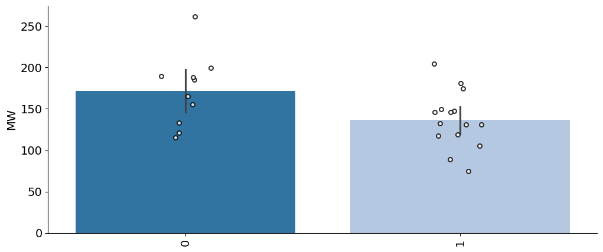
plot_group_bar
def plot_group_bar(
df, value_cols, # list of column names for values, the order depends on the first item
group, # column name of group (e.g., 'kinase')
figsize:tuple=(12, 5), order:NoneType=None, title:NoneType=None, fontsize:int=14, rotation:int=90,
data:NoneType=None, x:NoneType=None, y:NoneType=None, hue:NoneType=None, hue_order:NoneType=None,
estimator:str='mean', errorbar:tuple=('ci', 95), n_boot:int=1000, seed:NoneType=None, units:NoneType=None,
weights:NoneType=None, orient:NoneType=None, color:NoneType=None, palette:NoneType=None, saturation:float=0.75,
fill:bool=True, hue_norm:NoneType=None, width:float=0.8, dodge:str='auto', gap:int=0, log_scale:NoneType=None,
native_scale:bool=False, formatter:NoneType=None, legend:str='auto', capsize:int=0, err_kws:NoneType=None,
ci:Deprecated=<deprecated>, errcolor:Deprecated=<deprecated>, errwidth:Deprecated=<deprecated>, ax:NoneType=None
):
Plot grouped bar graph from dataframe.
plot_group_bar(info,['pKa1','pKb2'],'Name')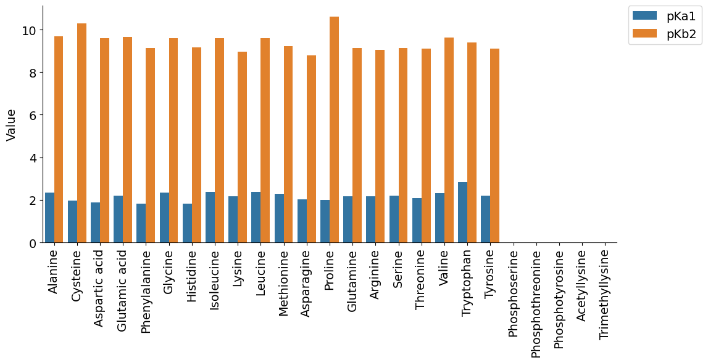
Stacked bar graph
plot_stacked
def plot_stacked(
df, column, hue, figsize:tuple=(5, 4), xlabel:NoneType=None, ylabel:NoneType=None, add_value:bool=True,
kwargs:VAR_KEYWORD
):
Violin plot
plot_violin
def plot_violin(
data, value:str='value', group:str='variable', ylabel:NoneType=None, dots:bool=True, figsize:tuple=(5, 3),
kwargs:VAR_KEYWORD
):
Plot violin plots (with optional strip dots) for long-form data.
# plot_violin(data,ylabel='Accuracy',figsize=(4,3))add_stats
def add_stats(
ax, data, value:str='value', group:str='variable', pairs:NoneType=None, test:str='t-test_ind', loc:str='inside',
text_format:str='star', kwargs:VAR_KEYWORD
):
Box plot
plot_box
def plot_box(
df, value, # colname of value
group, # colname of group
title:NoneType=None, figsize:tuple=(6, 3), fontsize:int=14, dots:bool=True, rotation:int=90, data:NoneType=None,
x:NoneType=None, y:NoneType=None, hue:NoneType=None, order:NoneType=None, hue_order:NoneType=None,
orient:NoneType=None, color:NoneType=None, palette:NoneType=None, saturation:float=0.75, fill:bool=True,
dodge:str='auto', width:float=0.8, gap:int=0, whis:float=1.5, linecolor:str='auto', linewidth:NoneType=None,
fliersize:NoneType=None, hue_norm:NoneType=None, native_scale:bool=False, log_scale:NoneType=None,
formatter:NoneType=None, legend:str='auto', ax:NoneType=None
):
Plot box plot.
plot_box(info,value='MW',group='cat',palette='tab20')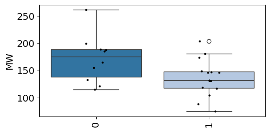
Correlation
plot_rel
def plot_rel(
df, # dataframe that contains data
x, # x axis values, or colname of x axis
y, # y axis values, or colname of y axis
text_location:tuple=(0.8, 0.1), # relative coords in Axes (0–1)
method:str='spearman', # correlation method: 'pearson' or 'spearman'
index_list:NoneType=None, # list of indices to annotate
hue:NoneType=None, reg_line:bool=True, data:NoneType=None, x_estimator:NoneType=None, x_bins:NoneType=None,
x_ci:str='ci', scatter:bool=True, fit_reg:bool=True, ci:int=95, n_boot:int=1000, units:NoneType=None,
seed:NoneType=None, order:int=1, logistic:bool=False, lowess:bool=False, robust:bool=False, logx:bool=False,
x_partial:NoneType=None, y_partial:NoneType=None, truncate:bool=True, dropna:bool=True, x_jitter:NoneType=None,
y_jitter:NoneType=None, label:NoneType=None, color:NoneType=None, marker:str='o', scatter_kws:NoneType=None,
line_kws:NoneType=None, ax:NoneType=None
):
Given a dataframe and the name of two columns, plot the two columns’ correlation with either Pearson or Spearman. Annotate points if their index is in index_list.
norm = Data.get_pspa().iloc[:,:-6].T
norm.head()| kinase | AAK1 | ACVR2A | ACVR2B | AKT1 | AKT2 | AKT3 | ALK2 | ALK4 | ALPHAK3 | AMPKA1 | ... | NTRK3 | TXK | TYK2 | TYRO3 | FLT1 | KDR | FLT4 | WEE1_TYR | YES1 | ZAP70 |
|---|---|---|---|---|---|---|---|---|---|---|---|---|---|---|---|---|---|---|---|---|---|
| -5P | 0.0720 | 0.0415 | 0.0533 | 0.0603 | 0.0602 | 0.0705 | 0.0536 | 0.0552 | 0.0571 | 0.0555 | ... | 0.0656 | 0.0784 | 0.0606 | 0.0661 | 0.0642 | 0.0634 | 0.0457 | 0.0531 | 0.0677 | 0.0602 |
| -5G | 0.0245 | 0.0481 | 0.0517 | 0.0594 | 0.0617 | 0.0624 | 0.0659 | 0.0574 | 0.0478 | 0.0504 | ... | 0.0751 | 0.0795 | 0.0674 | 0.0666 | 0.0688 | 0.0672 | 0.0531 | 0.0640 | 0.0571 | 0.0880 |
| -5A | 0.0284 | 0.0584 | 0.0566 | 0.0552 | 0.0643 | 0.0745 | 0.0662 | 0.0605 | 0.0253 | 0.0534 | ... | 0.0594 | 0.0669 | 0.0561 | 0.0548 | 0.0597 | 0.0556 | 0.0488 | 0.0559 | 0.0537 | 0.0623 |
| -5C | 0.0456 | 0.0489 | 0.0772 | 0.0605 | 0.0582 | 0.0628 | 0.0762 | 0.0483 | 0.0384 | 0.0588 | ... | 0.0517 | 0.0662 | 0.0521 | 0.0533 | 0.0618 | 0.0517 | 0.0553 | 0.0560 | 0.0530 | 0.0496 |
| -5S | 0.0425 | 0.0578 | 0.0533 | 0.0516 | 0.0534 | 0.0442 | 0.0567 | 0.0574 | 0.0571 | 0.0504 | ... | 0.0452 | 0.0561 | 0.0506 | 0.0543 | 0.0614 | 0.0541 | 0.0512 | 0.0433 | 0.0527 | 0.0471 |
5 rows × 396 columns
plot_rel(df=norm, x='AAK1', y='BIKE')
Matrix heatmap
get_similarity
def get_similarity(
df, metric:str='euclidean'
):
Calculate distance matrix of a df; also return inverse df (similarity df)
plot_corr
def plot_corr(
df_corr, mask_method:str='upper', # "upper", "lower", or None
inverse_color:bool=False, figsize:tuple=(15, 10), annot:bool=True, linewidths:float=0.1, kwargs:VAR_KEYWORD
):
Plot distance/similarity matrix
corr = info.head(8).corr(numeric_only=True)plot_corr(corr)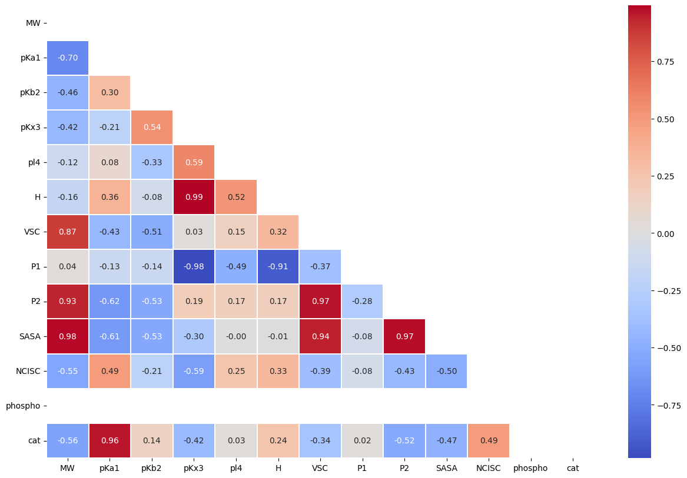
AUCDF
We compute the area under the empirical cumulative distribution function (CDF) as a function of kinase rank using the trapezoidal rule.
Let $ r_{(1)} < r_{(2)} < < r_{(n)} $ be the sorted rank values (e.g., \(1,2,\dots,n\)), and define the empirical CDF values as:
\[ F(r_{(i)}) = \frac{i}{n} \]
The normalized area under this CDF-vs-rank curve (AUCDF) is then computed via the trapezoidal rule:
\[ \text{AUC}_{\text{CDF}} = \frac{1}{r_{\max} - r_{\min}} \sum_{i=1}^{n-1} \frac{F(r_{(i)}) + F(r_{(i+1)})}{2} \cdot (r_{(i+1)} - r_{(i)}) \]
where $ r_{} = r_{(1)} $, typically 1; $ r_{} = r_{(n)} $, typically \(n\).
This measures how quickly the cumulative mass increases across the ranked kinases. If better kinases (lower rank) tend to appear earlier in the CDF, the AUCDF will be higher.
get_AUCDF
def get_AUCDF(
df, col, reverse:bool=False, plot:bool=True, xlabel:str='Rank of reported kinase'
):
Plot CDF curve and get relative area under the curve
get_AUCDF(sorted_df,'values')/tmp/ipykernel_674/2030375725.py:15: DeprecationWarning: `trapz` is deprecated. Use `trapezoid` instead, or one of the numerical integration functions in `scipy.integrate`.
area_under_curve = np.trapz(y_values, x_values)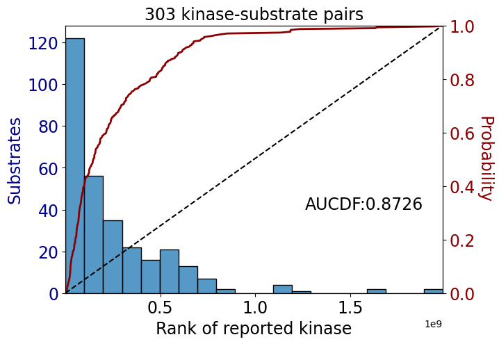
np.float64(0.872608302329996)Confusion matrix
plot_confusion_matrix
def plot_confusion_matrix(
target, # pd.Series
pred, # pd.Series
class_names:list=['0', '1'], normalize:bool=False, title:str='Confusion matrix',
cmap:LinearSegmentedColormap=<matplotlib.colors.LinearSegmentedColormap object at 0x7fdce51fb380>
):
Plot the confusion matrix.
target = info.MW<160
pred = info.pKa1>2.1plot_confusion_matrix(target,pred,normalize=True)Normalized confusion matrix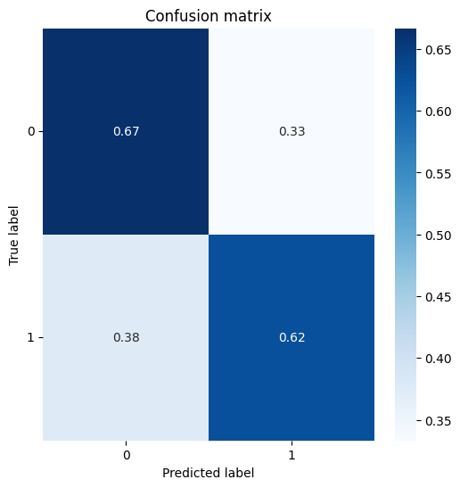
Pie plot
plot_pie
def plot_pie(
value_counts, # value counts
hue_order:NoneType=None, # list of strings
labeldistance:float=0.8, fontsize:int=12, fontcolor:str='black', palette:str='tab20', figsize:tuple=(4, 3)
):
info=Data.get_kinase_info()plot_pie(info.modi_group.value_counts(),
fontsize=10,
labeldistance=1)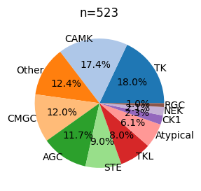
Bar composition
calculate_pct
def calculate_pct(
df, bin_col, hue_col
):
Get percentage for hue in each bin; with hue adding up to 1 in each bin.
plot_composition
def plot_composition(
df, bin_col, hue_col, palette:str='tab20', legend_title:NoneType=None, rotate:int=45, xlabel:NoneType=None,
ylabel:str='Percentage', figsize:tuple=(5, 3)
):
Plot bar count with value text
plot_cnt
def plot_cnt(
cnt, xlabel:NoneType=None, ylabel:str='Count', figsize:tuple=(6, 3)
):